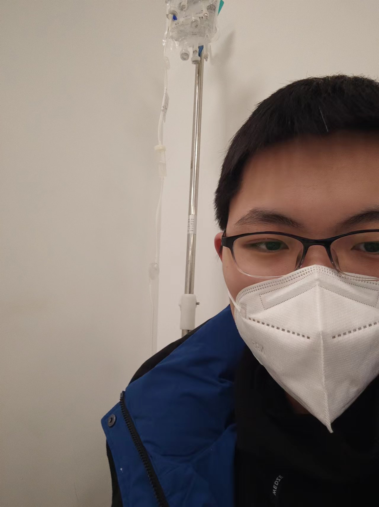
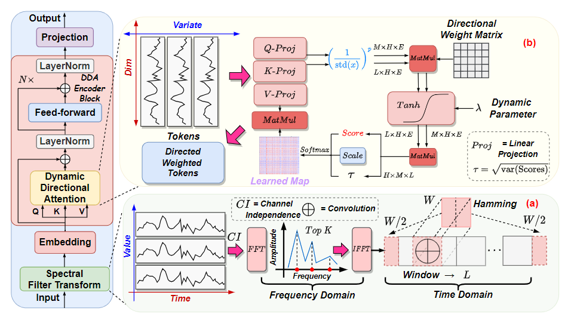
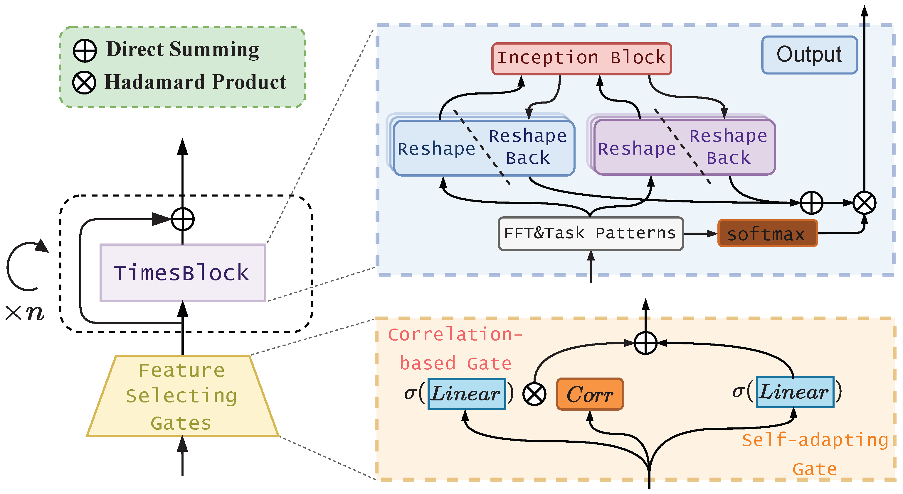
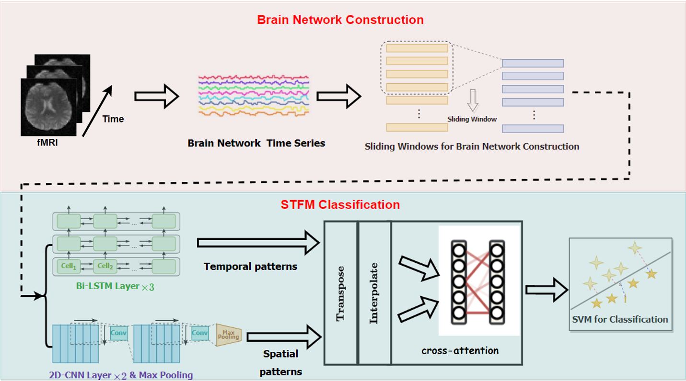
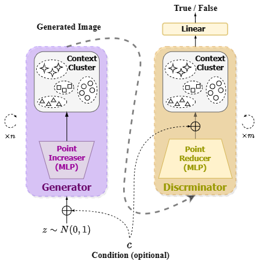

|
Ziyu Zhou 周子渔
My name is Ziyu Zhou. I am a senior student majoring in Computer Science and Technology at Faculty of Information Techonology Beijing University of Technology, under the supervision of Prof. Gengyu Lyu at DMS Lab.
I am honored to be joining the CityMind Lab @HKUST(GZ) as an MPhil student this autumn, under the supervision of Prof. Yuxuan Liang.
As an academic rookie, I am engaged in research related to machine learning applications, with a primary focus on time series representation learning and interpretable tasks related to time series. Specifically, my research primarily focuses on time series forecasting and other downstream tasks of time series analysis, such as classification. My core research goal is to model real-world time series data with different temporal patterns and distributions using a universal foundation model.
During my undergraduate studies, I am privileged to be collaborating with Yiming Huang @HKUST(GZ) and Zihao Wang@UHawaii-Manoa so far. Additionally, I am eager to engage in more interdisciplinary collaborations in the future.
Email1 /
Email2 /
Scholar /
X /
Github /
CV
|

|
|
"The purpose of computing is insight, not numbers." —— Richard Wesley Hamming
|
News
2024/04/17
One paper about time series was accepted by IJCAI! Gratitude to all collaborators!
2023/12/01
I decided to accept the MPhil offer from HKUST(GZ) Fok Ying Tung Graduate School!
2023/10/26
One paper about PM2.5 forecasting was accepted by Atmosphere! Gratitude to all collaborators!
2023/08/25
One paper about ASD detection was accepted by PRICAI! Gratitude to all collaborators!
|
Research Programs & Publication
(* denotes corresponding author and ^ indicates equal contribution.)
|
|

|
SDformer: Transformer with Spectral Filter and Dynamic Attention for Multivariate Time Series Long-term Forecasting
Ziyu Zhou, Gengyu Lyu*, Yiming Huang, Zihao Wang, Ziyu Jia, Zhen Yang
The 33rd International Joint Conference on Artificial Intelligence (IJCAI '24, CCF-A & CORE-A*)
Representative Work of My Undergraduate Research
Code
We propose a novel Transformer architecture (named SDformer) for long-term time series forecasting. It is the first time to address the problem of smooth attention distribution when modeling time series data with a large number of variates.
|
|

|
TimesNet-PM2.5: Interpretable TimesNet for Disentangling Intraperiod and Interperiod Variations in PM2.5 Prediction
Yiming Huang^, Ziyu Zhou^, Zihao Wang^, Xiaoying Zhi, Xiliang Liu*
Atmosphere (JCR-Q3)
Paper Link
In this paper, we accomplish task-specific adaption of TimesNet (ICLR '23) named TimesNet-PM2.5. This specialized version improved the performance and interpretability of the PM2.5 prediction of Haikou, Hainan Province.
|
|

|
STFM: Enhancing Autism Spectrum Disorder Classification Through Ensemble Learning-Based Fusion of Temporal and Spatial fMRI Patterns
Ziyu Zhou^, Yiming Huang^, Yining Wang^, Yin Liang*
The 20th Pacific Rim International Conference on Artificial Intelligence (PRICAI '23, CCF-C & CORE-B)
Paper Link / PDF
We propose a Spatial and Temporal framework named STFM based on cross-attention for better autism spectrum disorder classification. The results show that STFM's classification accuracy surpassed that of many machine learning models.
|
|

|
CoC-GAN: Employing Context Cluster for Unveiling a New Pathway in Image Generation
Zihao Wang^, Yiming Huang^, Ziyu Zhou^
Arxiv(2023) 2308.11857
arXiv
We employ Context-Clustering Block (ICLR '23) into GAN for better interpretability.
|
|
|
Bejing University of Technology
Faculty of Information Technology, B.Eng. in Computer Science and Technology
2020.09 - 2024.07, Beijing, Chaoyang
|
|
|
Beijing No.4 High School
High School Graduate
2017.09 - 2020.07, Beijing, Xicheng
|
|
{kind=link}